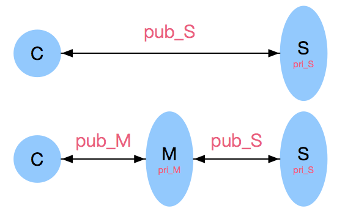
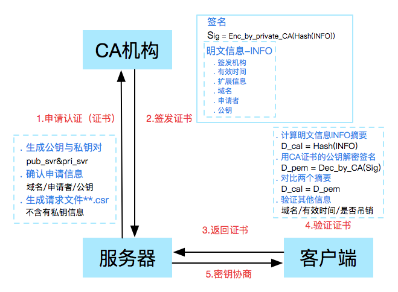
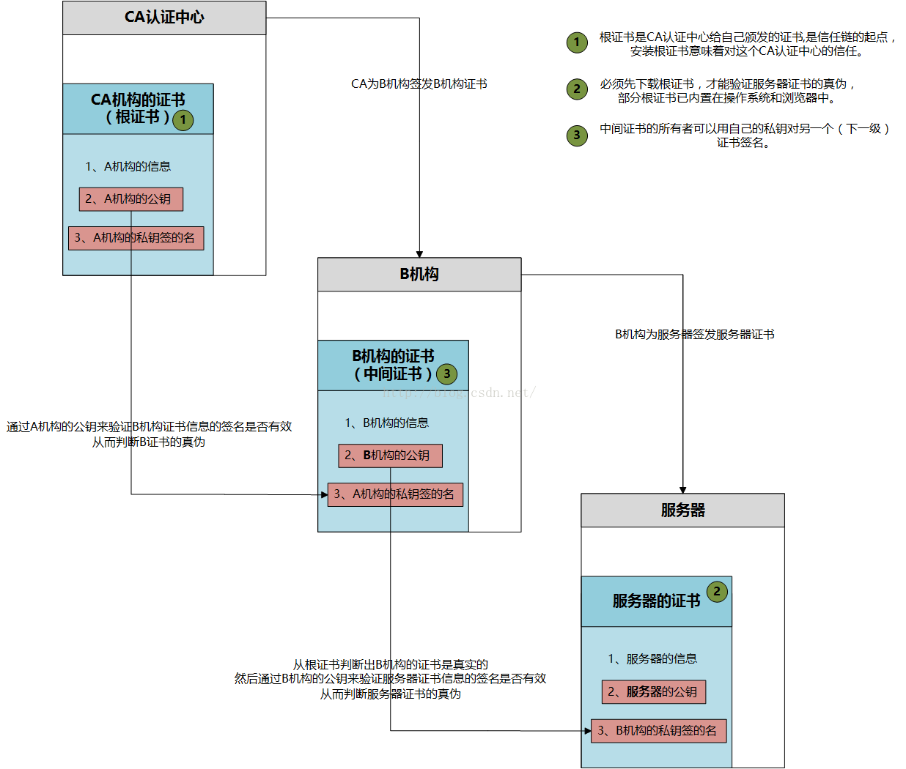
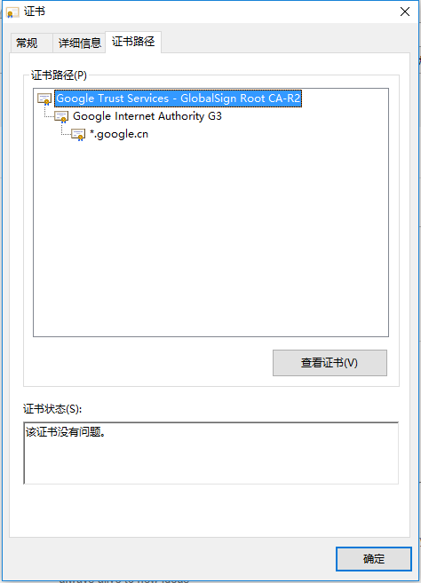

CA证书
撰写于 2019-07-03 修改于 2019-07-03 分类 杂记
CA证书
为什么要有CA
没有接触过CA之前，可能会有这个疑问，既然有了非对称加密，为什么还要用CA证书呢？那是因为非对称加密有一个很严重的缺陷：身份验证，举个例子：

- 客户端C和服务端S，如果要进行通信，服务端S就必须要把自己的公钥pub_S发给客户端。
- 这时有一个恶意节点M截获了两者的通信，于是节点M，就自己生成了一对秘钥
- 节点M收到客户端C请求公钥消息，就把自己生成的pub_M发给了客户端C
- 然后节点M向服务端S发送请求公钥的消息，获取到了服务端的公钥pub_S
- 因为客户端C无法通过公钥，获取服务端的身份信息，就认为已经和服务端S建立了可信连接
- 然后客户端C就使用服务器M提供的pub_M加密数据，节点M就获取到了数据的明文，就可以窃听，篡改数据了
如何解决上述问题
问题的根本在于：确保获取的公钥途径是合法的，也就是客户端能够验证服务器的身份信息。这时候，就要引入权威的第三方机构CA。CA负责核实公钥拥有者的信息，并颁发认证证书，同时为使用者提供证书的验证服务，流程如下：

大致流程如下：
a、服务方S向第三方机构CA提交公钥、组织信息、个人信息(域名)等信息并申请认证;
b、CA通过线上、线下等多种手段验证申请者提供信息的真实性，如组织是否存在、企业是否合法，是否拥有域名的所有权等;
c、如信息审核通过，CA会向申请者签发认证文件-证书。证书包含以下信息：申请者公钥、申请者的组织信息和个人信息、签发机构 CA的信息、有效时间、证书序列号等信息的明文，同时包含一个签名;签名的产生算法：首先，使用散列函数计算公开的明文信息的信息摘要，然后，采用 CA的私钥对信息摘要进行加密，密文即签名;
d、客户端 C 向服务器 S 发出请求时，S 返回证书文件;
e、客户端 C读取证书中的相关的明文信息，采用相同的散列函数计算得到信息摘要，然后，利用对应 CA的公钥解密签名数据，对比证书的信息摘要，如果一致，则可以确认证书的合法性，即公钥合法;
f、客户端然后验证证书相关的域名信息、有效时间等信息;
g、客户端会内置信任CA的证书信息(包含公钥)，如果CA不被信任，则找不到对应 CA的证书，证书也会被判定非法
CA机构本质是做什么的
本质上来讲：CA机构就是生成了一个密钥对，并维护CRL（证书吊销列表）。如果有公司想要申请证书，就要向CA机构提交申请信息（国家，省份，公司的名字，服务器域名，服务器公钥等等），CA机构负责审核该公司提交信息的真实性，然后CA机构根据申请信息生成签名证书。该证书包含明文信息 （签发机构，有效时间，证书序列号，服务器域名，申请者，公钥等）和摘要签名（用自身的私钥对明文信息的摘要进行签名）。（赚钱如此容易！）
证书链
从证书的验证流程可以知道，如果想验证服务器的证书是否合法，只需拿根证书中公钥对服务器证书签名进行解密，对比服务器证书中明文的摘要，如果相同即为合法证书。
那根证书 是什么呢？根证书也叫自签名证书，是CA机构用自己的私钥对自己的信息进行签名生成证书
证书链就很好理解了!
如果在根证书和服务器证书之间加一级或者多级证书，就构成了证书链，假设证书链的构架是：A->B->C->D…->M->N，A是根证书，N是服务器证书，中间B到M都是中间证书，都是由上一级CA机构颁发的，例如证书B就是由拥有证书A的机构颁发的，证书C由拥有证书B的机构颁发的，依次类推，如果想验证证书N的合法性，就要用到证书M，那如何保证证书M合法性呢，那就要继续往上验证，直到根证书。大致流程如下：

浏览器中的证书
浏览器或者系统中会内置一些可信CA机构的证书，以谷歌为例，可以看到谷歌的证书:

总结
通过以上，可以发现，CA原理不复杂，就是用来验证身份。当然，自己本地也可以本地生成根证书，也可以颁发证书，区块链中的MSP模块就用到这CA，所以CA的原理必须要掌握！
参考：
CA证书介绍 https://www.jianshu.com/p/32e51b9ecab4
什么是证书链 https://blog.csdn.net/win15135173776/article/details/61193997
SSL 之证书链 https://blog.csdn.net/Shen_Guo/article/details/49891459